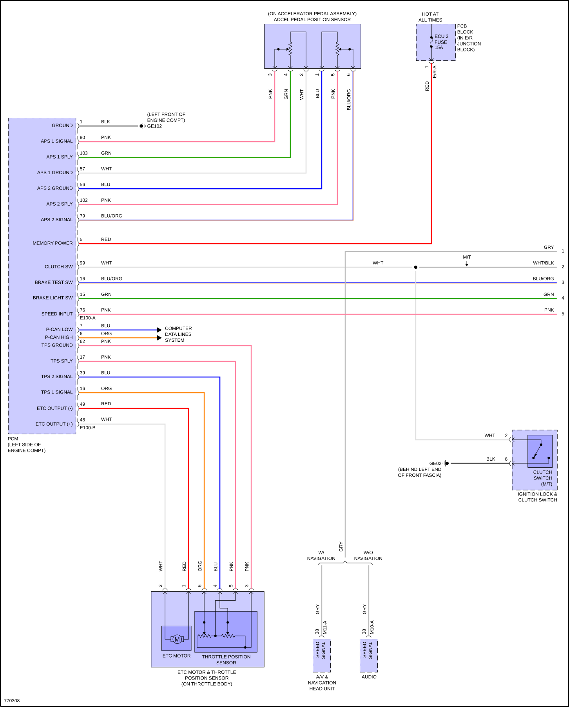
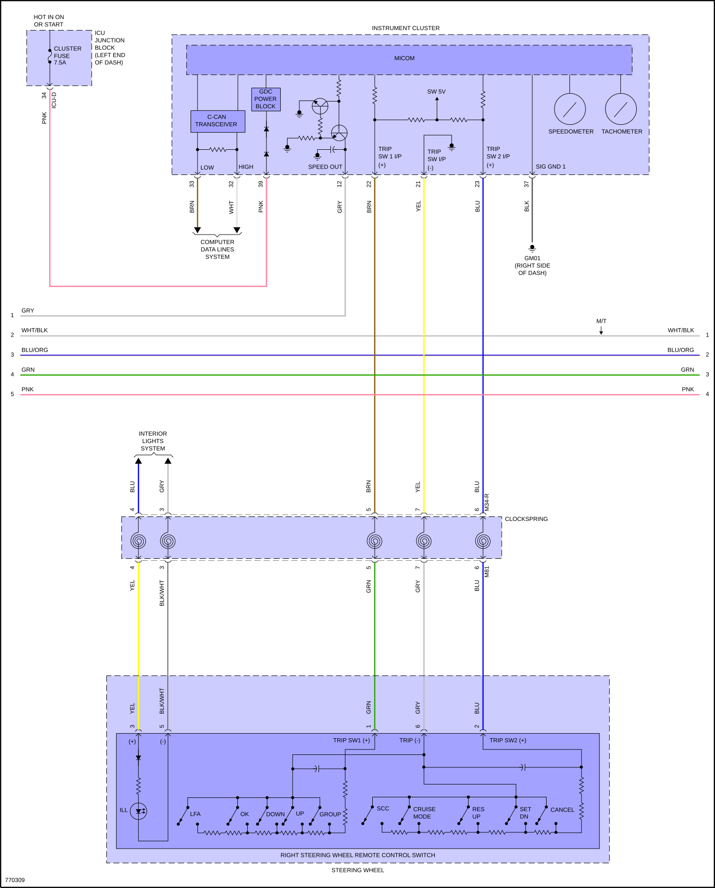
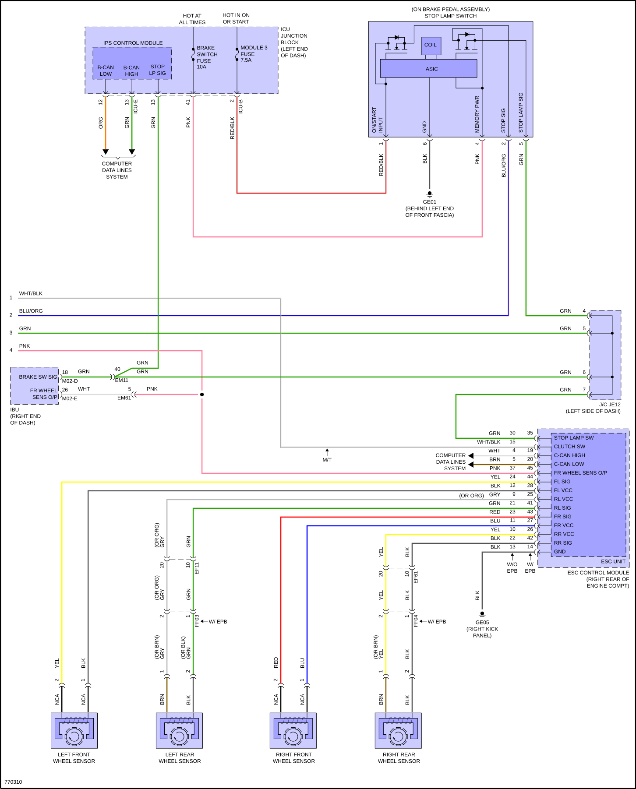
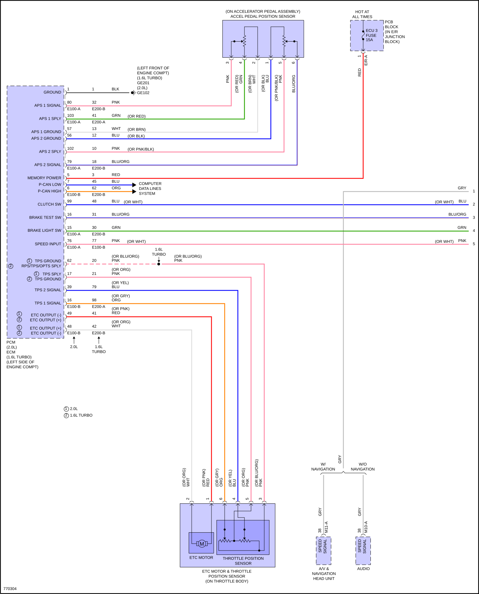
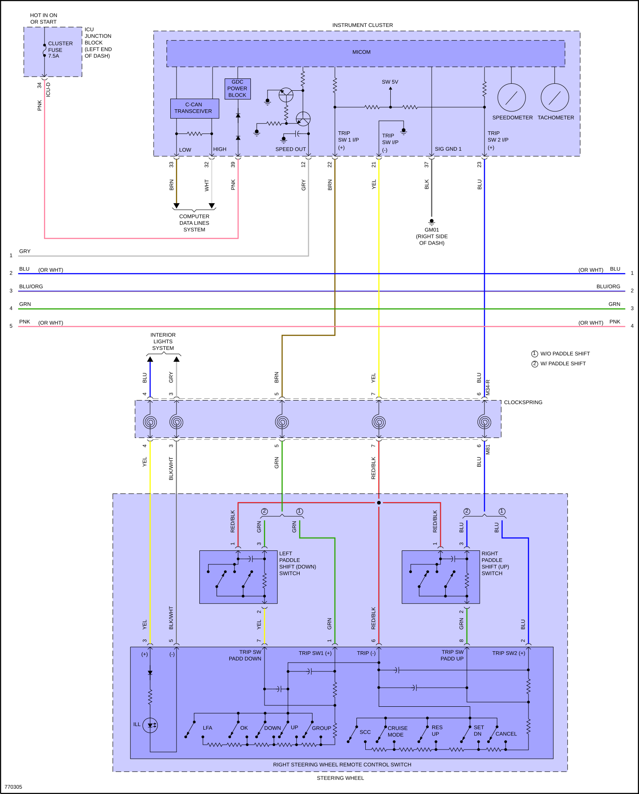
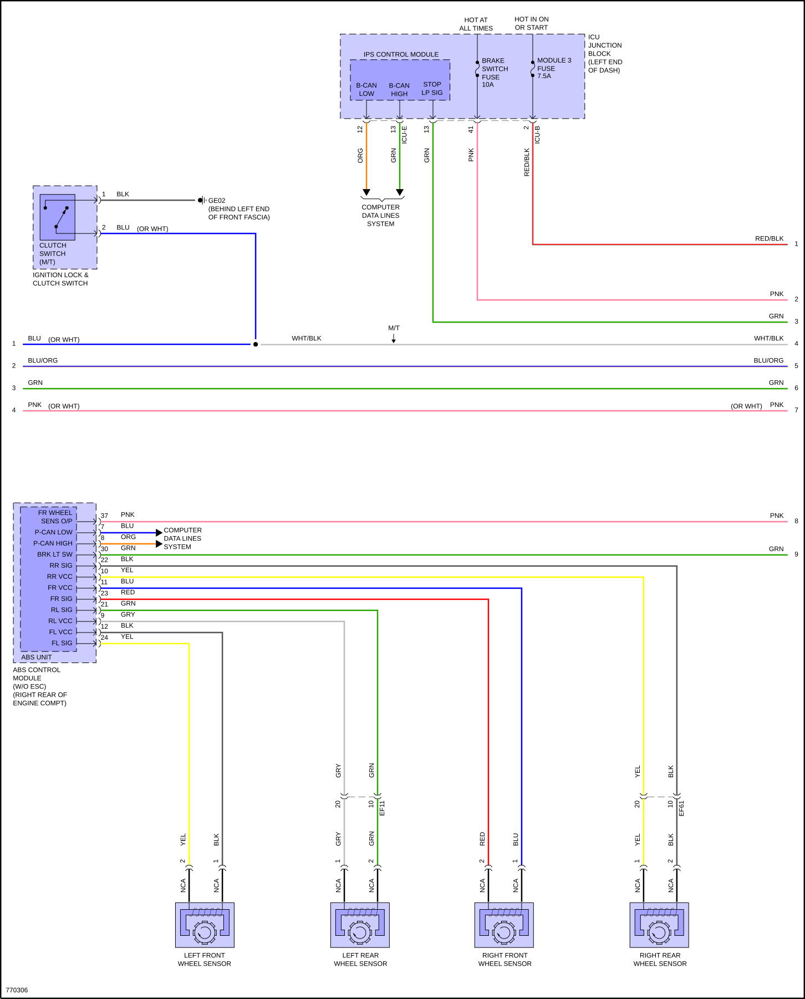
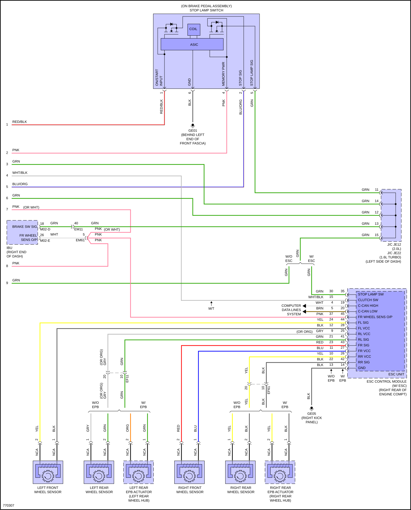

LEMON Manuals
: Even more car manuals for everyone: 1960-2025
Home
>>
Hyundai
>>
2022
>>
Elantra N Line, Standard Trans
>>
Repair and Diagnosis
>>
Electrical
>>
Wiring Diagrams
>>
System Wiring Diagrams
>>
Cruise Control
>>
2.0L
Cruise Control: 2.0L
Fig 1: 2.0L, Cruise Control Circuit, CN7A (1 of 3)

Fig 2: 2.0L, Cruise Control Circuit, CN7A (2 of 3)

Fig 3: 2.0L, Cruise Control Circuit, CN7A (3 of 3)

Fig 4: 2.0L, Cruise Control Circuit, CN7 (1 of 4)

Fig 5: 2.0L, Cruise Control Circuit, CN7 (2 of 4)

Fig 6: 2.0L, Cruise Control Circuit, CN7 (3 of 4)

Fig 7: 2.0L, Cruise Control Circuit, CN7 (4 of 4)
